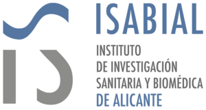
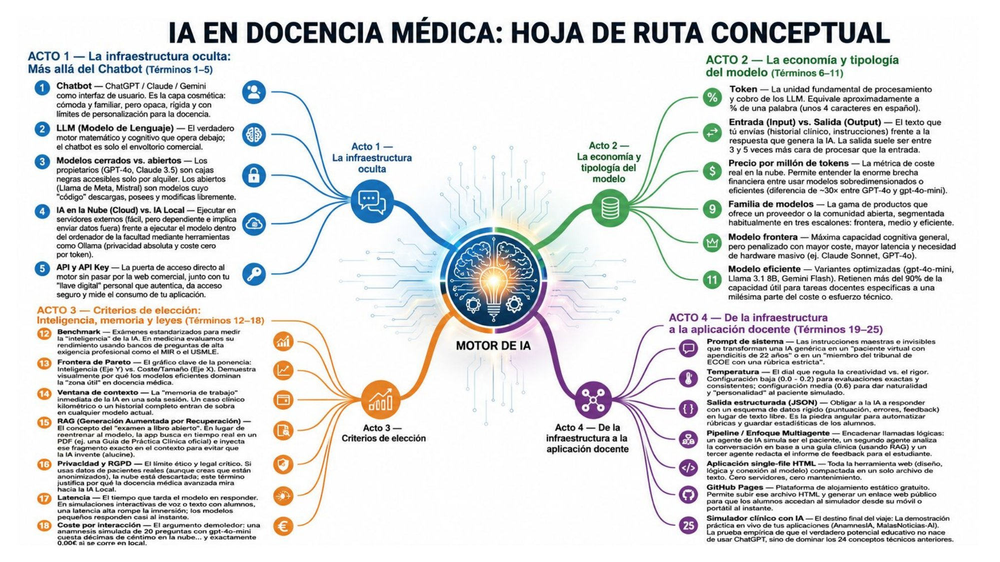
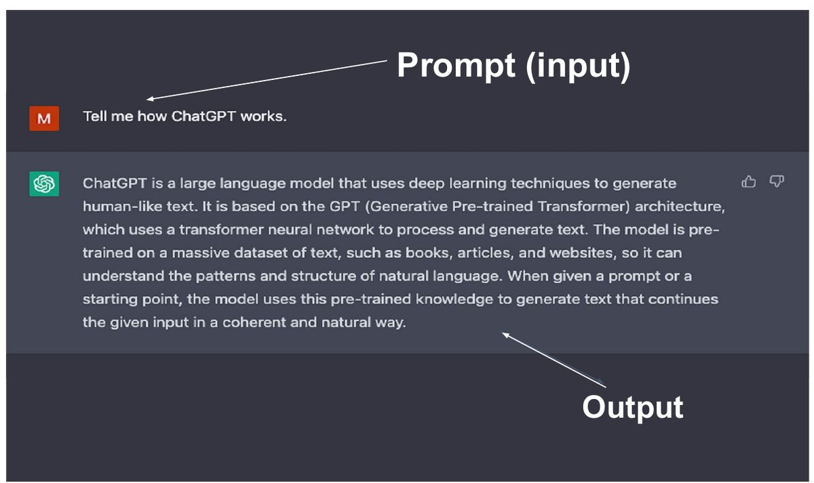
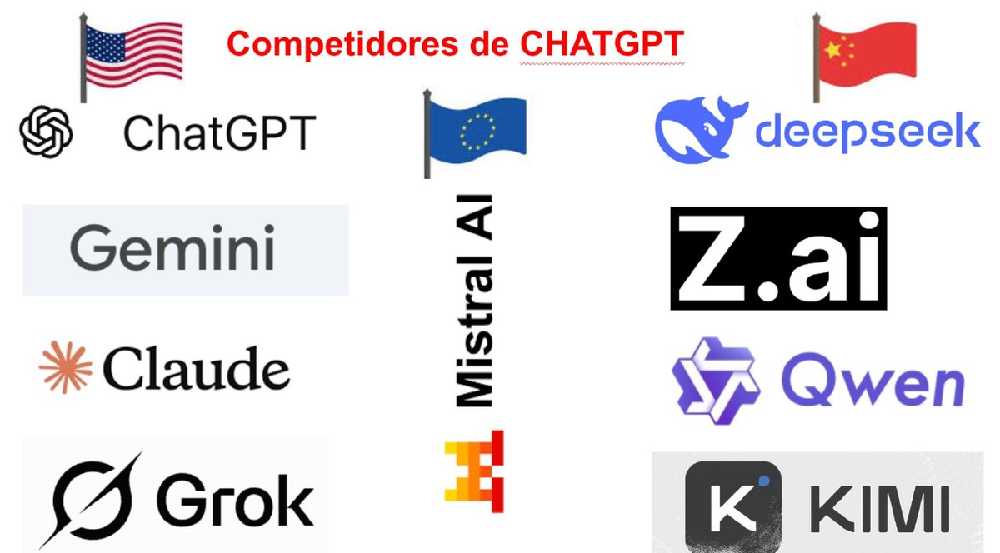
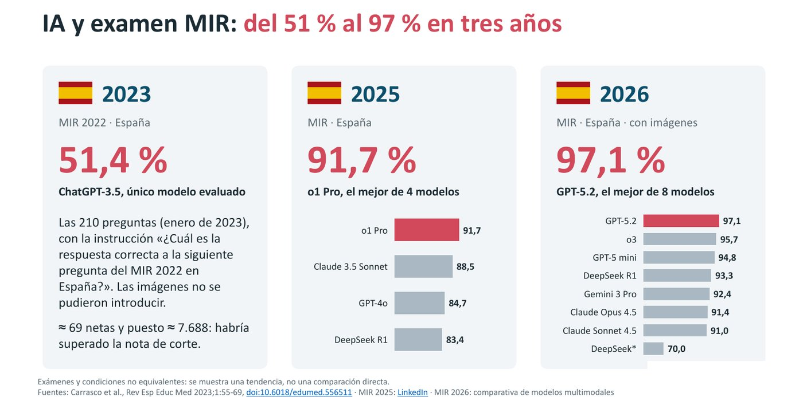
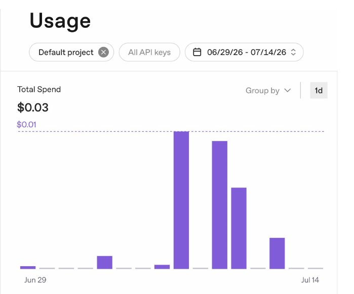
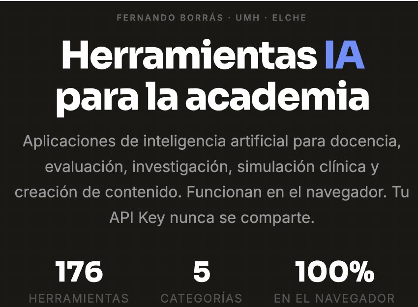
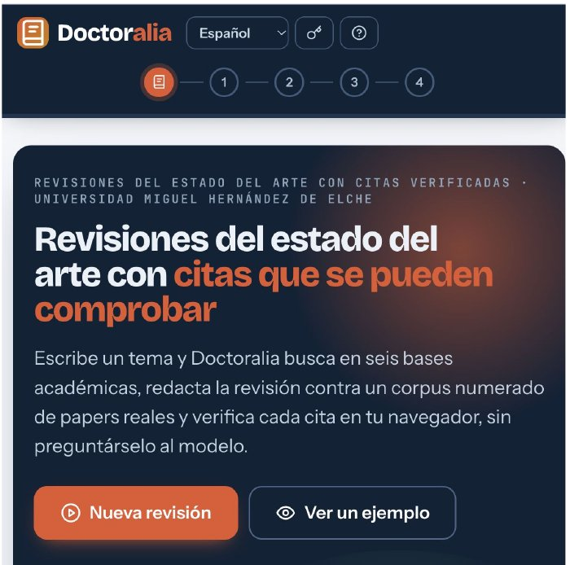
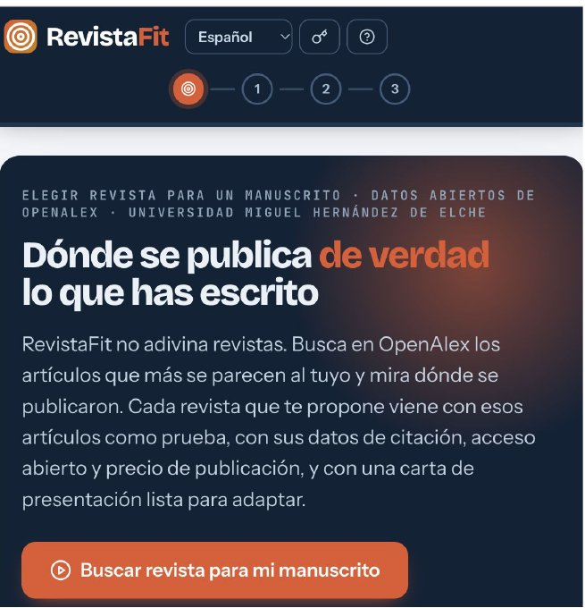
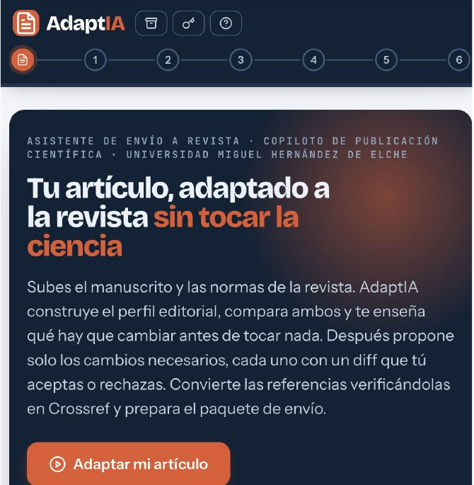

Herramientas de IA para la investigación · Sesión 1 de 5
Qué hay detrás del chat, cuánto cuesta un modelo, cómo elegirlo y cómo salir hoy con tu clave lista y protegida.
Fernando Borrás Rocher · Universidad Miguel Hernández · Formación ISABIAL
Qué te llevas hoy
Qué ocurre entre tu pregunta y la respuesta, y por qué el chat es solo una de las puertas.
Capacidad, coste, memoria y privacidad: cuatro preguntas para decidir qué modelo usar en cada tarea.
Clave de API con límite de gasto, un modelo elegido y la ficha de tu proyecto para el resto del curso.
Hoja de ruta

Acto 1

Lo esencial

No solo ChatGPT
¿Cuánto saben?

Más capaces no significa infalibles: un 3 % de error en un examen es mucho en un manuscrito. Por eso todas las apps del curso comprueban con código lo que propone la IA.
Dos formas de pagar la inteligencia
≈ 20 € al mes
Interfaz de chat lista para usar, con límites de uso. Ideal para conversar, explorar y trabajar a mano.
por token
Sin interfaz: la conectas a tus apps, hojas de cálculo o cuadernos. Tú eliges el modelo y controlas el gasto.
Ejemplo: resumir una charla entera por API cuesta ≈ 0,10 $ con un modelo grande (Claude Opus 5.5) y ≈ 0,004 $ con uno pequeño (GPT-4o mini).
Cálculo: 18 000 tokens de entrada y 1 500 de salida. Tarifas de octubre de 2026.
Tener ChatGPT Plus no da acceso a la API: son productos distintos con facturación separada.
Concepto clave
Una API es un camarero: la app hace el pedido, la API lo lleva a la cocina (el modelo) y vuelve con el plato. La clave es tu tarjeta de cliente.
Dónde vive el modelo
GPT, Gemini, Claude: solo se usan a través del proveedor. Son los más capaces y los que usamos en el curso.
Llama, Qwen, DeepSeek, Mistral: se pueden descargar y ejecutar en tu equipo o en un servidor propio.
Nada que instalar: pagas por uso y el texto viaja al proveedor. Por eso trabajamos con datos anonimizados.
Los datos no salen del equipo, pero exige hardware potente y los modelos que caben son menos capaces.
Acto 2
La unidad de todo
1 000 tokens ≈ 5–6 páginas
Las palabras se parten en más trozos que en inglés: el mismo texto consume más tokens y cuesta algo más.
Cómo se paga
Todo lo que envías: tu pregunta, las instrucciones de la app y los documentos que adjuntas.
Lo que el modelo escribe. Suele costar unas 4–5 veces más por token que la entrada.
Cuenta de servilleta: un artículo de 20 páginas (≈ 4 000 tokens) + un resumen de 1 página (≈ 200 tokens) con un modelo de 2 $ / 10 $ por millón:
4 000 × 2 / 1 000 000 + 200 × 10 / 1 000 000 = 0,010 $
Familias de modelos
| Modelo | Para qué | Entrada / salida ($ por millón) |
|---|---|---|
| GPT-6 Luna | Tareas acotadas y gran volumen | 0,10 / 0,50 |
| GPT-6.1 Terra | Razonamiento visual y trabajo de oficina | 1 / 5 |
| GPT-6.1 Sol | Equilibrio entre capacidad y coste | 2 / 10 |
| GPT-6 Astra | El razonamiento más exigente | 10 / 50 |
Tarifas base de OpenAI a finales de 2026, recopiladas por Lisdata. Los precios cambian: consúltalos siempre en la página del proveedor.
Empieza siempre por el económico. Sube de gama solo si la tarea lo necesita de verdad.

Coste real
Acto 3
Inteligencia frente a coste
Esquema ilustrativo, sin datos reales.
Memoria de trabajo
Para muchos documentos, las apps no meten todo en la ventana: buscan los fragmentos relevantes y solo envían esos (lo que se llama RAG).
Creatividad controlada
Respuestas estables y repetibles. Extraer datos, clasificar, cribar artículos, revisar cifras.
Equilibrio. Redactar secciones, resumir, reescribir con estilo.
Variedad e ideas inesperadas, con más riesgo de inventar. Lluvia de ideas.
En investigación, por defecto, temperatura baja. Las apps del curso ya la fijan por ti en cada paso.
Lo que no ves
Eres un experto lector de artículos científicos.
Analiza el paper y responde en JSON estricto:
{
"title": "título detectado",
"sections": ["lista", "de", "secciones"],
"type": "experimental/review/...",
"year": "año si disponible"
}
DISCIPLINA: {{discipline}}
PAPER: {{paper_text}}
Leyes y responsabilidad
Son categoría especial del RGPD. Nunca envíes historias clínicas ni datos identificables: anonimiza antes.
La IA propone; la responsabilidad y la firma son tuyas.
Según las normas de la revista o de la convocatoria. Muchas ya lo exigen.
Ninguna cita ni cifra entra en un texto sin verificarla.
Por API, los proveedores no usan tus datos para entrenar por defecto, pero el texto sí sale de tu equipo.
Acto 4
Unos 12 minutos · con tarjeta y móvil a mano
isabial) y cópiala: solo se muestra una vez.Esquemas: la pantalla real puede diferir en detalles.
Buenas prácticas
No la compartas, ni en un correo, ni en un chat, ni en una diapositiva, ni en GitHub.
Tope mensual y alertas en la consola del proveedor.
Si se filtra una, la revocas sin romper las demás.
Barato por defecto; el potente solo cuando haga falta.
El modo lote rebaja en torno al 50 % y la caché abarata lo repetido.
No el precio por token: un modelo caro que acierta a la primera puede salir más barato.
Si algo se atasca
La clave es correcta pero no hay saldo. Carga los 5 $ en Billing.
Casi siempre un espacio pegado al copiar. Borra el campo y pega de nuevo.
No se recupera: bórrala en API keys y crea otra. Es gratis y tarda diez segundos.
Sirve una tarjeta personal, de prepago o un monedero virtual.

La idea del curso
Lo que viene



2 · Evidencia: Publication Radar, Doctoralia, PRISMIA · 3 · Financiación: FronterIA, GrantWriter, SubvencIA · 4 · Del dato al manuscrito: CuadernIA, NarrativIA, RefinIA · 5 · A la revista: RevistaFit, AdaptIA, ArbitrIA
Entregable de hoy
La usarás en todas las sesiones. Escríbela en un documento tuyo, sin datos identificables.